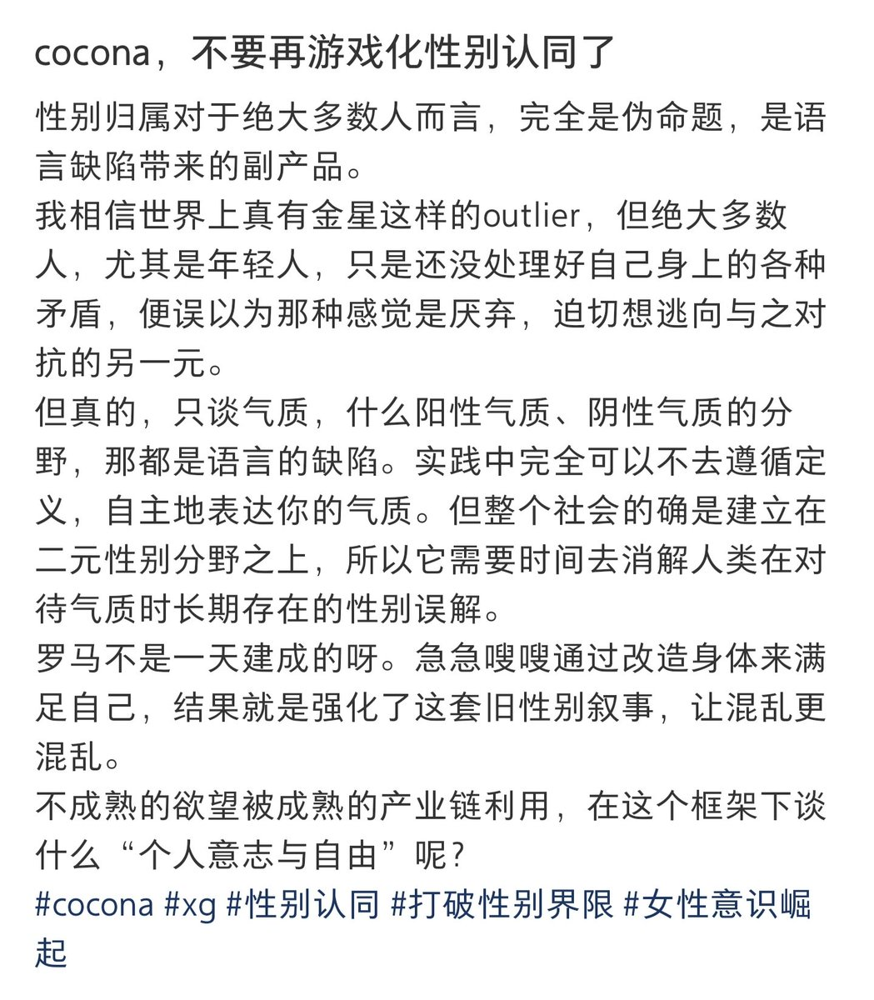

時璃風医詩🌈🏳️🌈
@hagishigure
慾望源於匱乏產物，自體感受到的匱乏源於小客體a的鏡像符號，小客體a源於大他者對自體的無法同一化差異的倫理焦慮的補償，自體回應慾望即是回應自體的他異性，即，對自身無法同一性的創傷的謙卑認可，是對內在他異性的一種克爾凱郭爾的「信仰騎士」般的愛。
而不行動，是對匱乏的絕對外在性的暴力同一

魏淑淑淑芬芬芬
@Nevernessian
尝试翻译下这种大脑升级terf的混乱逻辑：
因为性别是伪命题，所以你在意性别是陷入思维误区，你不需要采取任何行动，只要当它不存在，它就影响不了你。
评价就是果然大部分顺人事实上根本不知道自己是怎么活着的。 https://t.co/GzqrbArKb1